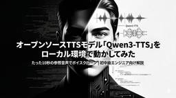

エンジニアブログ - GMOインターネットグループ グループ研究開発本部
https://recruit.group.gmo/engineer/jisedai
新しい技術で新しい価値を提供するGMOインターネットグループ グループ研究開発本部 グループ研究開発本部とは
フィード
LLMのパラメーターtemperature と top_pをチューニングしてみた
エンジニアブログ - GMOインターネットグループ グループ研究開発本部
こんにちは。次世代システム研究室のL.W.です。 天秤Bizを使った時、「家から洗車場まで50メートルです。今から自分の車を洗いに行きますが、自分の車で行くべきですか、それとも歩いて行くべきですか。 結論からお願いします […]The post LLMのパラメーターtemperature と top_pをチューニングしてみた first appeared on GMOインターネットグループ グループ研究開発本部.
4日前

音声生成AI「Qwen3-TTS」を検証してみた
エンジニアブログ - GMOインターネットグループ グループ研究開発本部
導入 こんにちは！グループ研究開発本部 AI研究開発室 共同研究推進グループのA.T.です。 最近、LLMや画像生成AIのニュースを追うだけでも一苦労ですよね。しかし、実は音声生成AIの分野も負けず劣らず、凄まじいスピー […]The post 音声生成AI「Qwen3-TTS」を検証してみた first appeared on GMOインターネットグループ グループ研究開発本部.
5日前
Gemini Embedding 2 を使ってみた〜テキスト・画像・音声・動画・PDFの類似度比較〜
エンジニアブログ - GMOインターネットグループ グループ研究開発本部
TL;DR GoogleはGemini Embedding 2を発表しました。テキストだけではなく、画像、音声、ビデオやPDFなどの異なるモーダルの埋め込みを同一の空間に埋め込めるマルチモーダル埋め込みモデルです。社内ド […]The post Gemini Embedding 2 を使ってみた〜テキスト・画像・音声・動画・PDFの類似度比較〜 first appeared on GMOインターネットグループ グループ研究開発本部.
6日前

Transient Storage における call frame ロールバック
エンジニアブログ - GMOインターネットグループ グループ研究開発本部
はじめに Dencun で導入された EIP-1153 は、EVM に TSTORE / TLOAD を追加し、トランザクション中のみ存在する一時ストレージ（Transient Storage）を扱えるようにした。Gas […]The post Transient Storage における call frame ロールバック first appeared on GMOインターネットグループ グループ研究開発本部.
11日前
Claude CodeによるAI駆動開発 〜Subagents と Agent Teamsの比較〜
エンジニアブログ - GMOインターネットグループ グループ研究開発本部
導入 こんにちは。グループ研究開発本部 次世代システム研究室のH.Oです。ここ最近、AIエージェントのツールの技術的トレンドは一気にAnthropicのClaude Codeへシフトしました。これを受けて全社的にClau […]The post Claude CodeによるAI駆動開発 〜Subagents と Agent Teamsの比較〜 first appeared on GMOインターネットグループ グループ研究開発本部.
17日前
Playwright Test Agentsとは？セットアップから自己修復まで全ステップ解説
エンジニアブログ - GMOインターネットグループ グループ研究開発本部
こんにちは。グループ研究開発本部 次世代システム研究室のT.D.Qです。 2025年10月、Playwright 1.56 のリリースとともに「Playwright Test Agents」が登場しました。 テスト計画か […]The post Playwright Test Agentsとは？セットアップから自己修復まで全ステップ解説 first appeared on GMOインターネットグループ グループ研究開発本部.
19日前
Amazon BedrockによるCodeCommit用の独自PR-Agentの構築
エンジニアブログ - GMOインターネットグループ グループ研究開発本部
結論 Amazon Bedrockと連携して、AWS CodeCommit用のPR-Agentを構築できた トークン最適化とチャンク分割により、大規模プルリクエストにも対応できた はじめに こんにちは。次世代システム研究 […]The post Amazon BedrockによるCodeCommit用の独自PR-Agentの構築 first appeared on GMOインターネットグループ グループ研究開発本部.
23日前
The Personal AI OS I Didn’t Have to Build
エンジニアブログ - GMOインターネットグループ グループ研究開発本部
こんにちは、次世代システム研究室のN.M.です。 How installing PAI turned Claude Code from a tool I used to a system that knows me. T […]The post The Personal AI OS I Didn’t Have to Build first appeared on GMOインターネットグループ グループ研究開発本部.
1ヶ月前
OpenClawでTelegramを使ってトレーディング戦略を構築してみた
エンジニアブログ - GMOインターネットグループ グループ研究開発本部
OpenClawでTelegramを使ってトレーディング戦略を構築してみた こんにちは。AI研究開発室のK.S.です。 今月の頭（2026年2月）には、2025年11月のリリースからわずか数ヶ月でOpenClaw（旧称： […]The post OpenClawでTelegramを使ってトレーディング戦略を構築してみた first appeared on GMOインターネットグループ グループ研究開発本部.
1ヶ月前
PaperBanana: 学術イラスト自動生成AIエージェントを使ってみた
エンジニアブログ - GMOインターネットグループ グループ研究開発本部
TL;DR PaperBananaは、論文などで利用するダイヤグラムや統計グラフなどの学術イラストを自動生成するAIエージェントツールで、Peking UniversityとGoogle Cloud AI Researc […]The post PaperBanana: 学術イラスト自動生成AIエージェントを使ってみた first appeared on GMOインターネットグループ グループ研究開発本部.
1ヶ月前
LLM推論エンジンSGLangの話
エンジニアブログ - GMOインターネットグループ グループ研究開発本部
こんにちは、グループ研究開発本部・AI研究開発室のA.Zです。 大規模言語モデル（LLM）の急速な進化に伴い、効率的な推論エンジンの重要性がますます高まっています。ChatGPTやClaude、Geminiなどの大規模言 […]The post LLM推論エンジンSGLangの話 first appeared on GMOインターネットグループ グループ研究開発本部.
2ヶ月前
DeepSeek Manifold-Constrained Hyper-Connections (mHC) について
エンジニアブログ - GMOインターネットグループ グループ研究開発本部
こんにちは、グループ研究開発本部・AI研究開発室のA.Zです。 今回は、DeepSeekが2025年末に発表し、新たなアーキテクチャ「Manifold-Constrained Hyper-Connections (mHC […]The post DeepSeek Manifold-Constrained Hyper-Connections (mHC) について first appeared on GMOインターネットグループ グループ研究開発本部.
2ヶ月前
[AIブログライター] 第4回：Claude code sub-agentとskillsのバイブコーディングで、Pair Trading戦略の検証と記事の自動生成
エンジニアブログ - GMOインターネットグループ グループ研究開発本部
こんにちは。AI研究開発室のK.S.です。 お久しぶりです。 ブログを書くのは手間がかかりませんか？ ネタがあっても、情報収集、要約、図の作成、フォーマット調整などの作業が待っています。特に外国人の私は日本語チェックも必 […]The post [AIブログライター] 第4回：Claude code sub-agentとskillsのバイブコーディングで、Pair Trading戦略の検証と記事の自動生成 first appeared on GMOインターネットグループ グループ研究開発本部.
2ヶ月前
[AIブログライター] 第3回：Claude code+n8n SkillsのバイブコーディングでCore-Satellite記事を自動生成
エンジニアブログ - GMOインターネットグループ グループ研究開発本部
こんにちは。AI研究開発室のK.S.です。 お久しぶりです。 ブログを書くのは手間がかかりませんか？ ネタがあっても、情報収集、要約、図の作成、フォーマット調整などの作業が待っています。特に外国人の私は日本語チェックも必 […]The post [AIブログライター] 第3回：Claude code+n8n SkillsのバイブコーディングでCore-Satellite記事を自動生成 first appeared on GMOインターネットグループ グループ研究開発本部.
2ヶ月前
[AIブログライター] 第2回：n8n×Multi-Agents×AirtableでMagic Formula記事の質を向上させる
エンジニアブログ - GMOインターネットグループ グループ研究開発本部
こんにちは。AI研究開発室のK.S.です。 お久しぶりです。 ブログを書くのは手間がかかりませんか？ ネタがあっても、情報収集、要約、図の作成、フォーマット調整などの作業が待っています。特に外国人の私は日本語チェックも必 […]The post [AIブログライター] 第2回：n8n×Multi-Agents×AirtableでMagic Formula記事の質を向上させる first appeared on GMOインターネットグループ グループ研究開発本部.
2ヶ月前
[AIブログライター] 第1回：n8n AI Agentで高配当株の関連取引戦略をサクッと整理
エンジニアブログ - GMOインターネットグループ グループ研究開発本部
こんにちは。AI研究開発室のK.S.です。 お久しぶりです。 ブログを書くのは手間がかかりませんか？ ネタがあっても、情報収集、要約、図の作成、フォーマット調整などの作業が待っています。特に外国人の私は日本語チェックも必 […]The post [AIブログライター] 第1回：n8n AI Agentで高配当株の関連取引戦略をサクッと整理 first appeared on GMOインターネットグループ グループ研究開発本部.
2ヶ月前
Unitree G1にアクティブな動きをさせる（BeyondMimic解説）
エンジニアブログ - GMOインターネットグループ グループ研究開発本部
Unitree G1にアクティブな動きをさせる（BeyondMimic解説） 目次 はじめに 概要とモチベーション 強化学習によるモーショントラッキング 運動軌道の潜在表現抽出（VAE） 潜在拡散モデルによる軌道生成 推 […]The post Unitree G1にアクティブな動きをさせる（BeyondMimic解説） first appeared on GMOインターネットグループ グループ研究開発本部.
2ヶ月前
画像生成AIジェネレータを作ろう
エンジニアブログ - GMOインターネットグループ グループ研究開発本部
画像生成AIを業務で使い倒すために ― Nano Banana Pro と画像・動画ジェネレーター実装の実践知 ― はじめに ここ数年、画像生成AI・動画生成AIの進化スピードは目を見張るものがあります。 「少し前ま […]The post 画像生成AIジェネレータを作ろう first appeared on GMOインターネットグループ グループ研究開発本部.
2ヶ月前
GLM-Image：Z.aiの自己回帰＋拡散のハイブリッド画像生成AI
エンジニアブログ - GMOインターネットグループ グループ研究開発本部
TL;DR Z.aiが「GLM-Image」というオープン画像生成AIモデルを発表しました。これは画像の内容を生成する自己回帰モデルと、その出力を高品質な画像に変換する拡散モデルのハイブリッド構造を採用し、中国語・英語の […]The post GLM-Image：Z.aiの自己回帰＋拡散のハイブリッド画像生成AI first appeared on GMOインターネットグループ グループ研究開発本部.
2ヶ月前
エンジニア必見 ─ AI駆動開発が切り開く3アクションの究極の開発ワークフロー
エンジニアブログ - GMOインターネットグループ グループ研究開発本部
導入 こんにちは。グループ研究開発本部 次世代システム研究室のH.Oです。前回の記事ではPlaywright MCPをAI駆動開発フローに組み込んでみた、という検証についてご紹介しました。順番が前後してしまいましたが、今 […]The post エンジニア必見 ─ AI駆動開発が切り開く3アクションの究極の開発ワークフロー first appeared on GMOインターネットグループ グループ研究開発本部.
2ヶ月前
ESP32-H2でロボットを動かしたい：Gamepad編
エンジニアブログ - GMOインターネットグループ グループ研究開発本部
こんにちは，S.T.です。 展示会場でロボットやその他の装置を動かす際に問題になるのは，なんといってもWi-Fiです。大抵の場合，輻輳してしまって思うように使えません。一方で，Bluetoothは周波数を切り替えて再送す […]The post ESP32-H2でロボットを動かしたい：Gamepad編 first appeared on GMOインターネットグループ グループ研究開発本部.
2ヶ月前
nanobananaで4コマ漫画を作ろう
エンジニアブログ - GMOインターネットグループ グループ研究開発本部
まとめ Nano Banana Proはプレゼンテーションや漫画等の文字混じりの画像生成を可能にした ４コマ漫画に注目して、生成を行う このとき、起承転結のストーリーをつけることや、キャラクタライズするといった工夫を施し […]The post nanobananaで4コマ漫画を作ろう first appeared on GMOインターネットグループ グループ研究開発本部.
3ヶ月前
LLM学習の新常識「Muonオプティマイザ」の話
エンジニアブログ - GMOインターネットグループ グループ研究開発本部
こんにちは、グループ研究開発本部・AI研究開発室のA.Zです 深層学習のオプティマイザというと、一般的によく使われているのはAdam・AdamWです。 この数年間で、Adamオプティマイザはまさに不動の王者として、深層学 […]The post LLM学習の新常識「Muonオプティマイザ」の話 first appeared on GMOインターネットグループ グループ研究開発本部.
3ヶ月前
BigQuery UDFのカオスをDataformでテスタブルにした話
エンジニアブログ - GMOインターネットグループ グループ研究開発本部
どうも。S.Y.です。 野良コードが点在しがちなBigqueryのUDFを、いい感じに一元管理する方法をご紹介します。 目次 背景: 管理されていないUDFの実態 解決方針: DataformでUDFを管理する Data […]The post BigQuery UDFのカオスをDataformでテスタブルにした話 first appeared on GMOインターネットグループ グループ研究開発本部.
3ヶ月前
金融時系列データのノイズ除去
エンジニアブログ - GMOインターネットグループ グループ研究開発本部
目次 はじめに：金融データとノイズの問題 ランダム行列理論とマルチェンコ・パスツール分布 ノイズ除去（Denoising）のアルゴリズム Pythonによる実装と検証 実データを用いた実験の設計 まとめ さいごに 参考資 […]The post 金融時系列データのノイズ除去 first appeared on GMOインターネットグループ グループ研究開発本部.
3ヶ月前
Karpathyが描く2025年のLLM：6つのパラダイムシフト
エンジニアブログ - GMOインターネットグループ グループ研究開発本部
TL;DR 出典：NotebookLM作成 RLVR：検証可能な報酬による強化学習が、LLMの推論能力向上の鍵となる Jagged Intelligence：LLMは「動物」のような汎用知性ではなく、特定領域で突出した「 […]The post Karpathyが描く2025年のLLM：6つのパラダイムシフト first appeared on GMOインターネットグループ グループ研究開発本部.
3ヶ月前
AIエージェントにFXの取引戦略を考えてもらった
エンジニアブログ - GMOインターネットグループ グループ研究開発本部
はじめに グループ研究開発本部・AI研究開発室のS.Sです。 最近はAIエージェントが流行っているので、今回の記事ではFXの取引戦略の実装からバックテストまで一気通貫でやってもらうというのを試したいと思います。 プロンプ […]The post AIエージェントにFXの取引戦略を考えてもらった first appeared on GMOインターネットグループ グループ研究開発本部.
3ヶ月前
MCP Toolbox for DatabasesでMysqlを操作してみた
エンジニアブログ - GMOインターネットグループ グループ研究開発本部
こんにちは。次世代システム研究室のL.W.です。 Claude desktop + MCPでmysqlデータベースを操作してみたが、データへの理解、データ操作に役に立っていると実感していますので、共有します。 今回のMC […]The post MCP Toolbox for DatabasesでMysqlを操作してみた first appeared on GMOインターネットグループ グループ研究開発本部.
3ヶ月前
フレームワーク選定ガイド：LangChain / AutoGen / CrewAI / ADK / OpenAI Agents SDKで始めるAIエージェント開発
エンジニアブログ - GMOインターネットグループ グループ研究開発本部
はじめに こんにちは、次世代システム研究室のK.X.Dです。 ChatGPT などの大規模言語モデル（Large Language Model）を業務に使おうとすると、必ずぶつかるのが「AI エージェント（AI agen […]The post フレームワーク選定ガイド：LangChain / AutoGen / CrewAI / ADK / OpenAI Agents SDKで始めるAIエージェント開発 first appeared on GMOインターネットグループ グループ研究開発本部.
3ヶ月前
EIP-7917 と Pre-Confirmation の関係
エンジニアブログ - GMOインターネットグループ グループ研究開発本部
こんにちは。次世代システム研究室のT.M です。 はじめに 先日、Ethereum において Fusaka アップグレードが行われました。このアップグレードには複数の EIP が含まれており、その中でも EIP-7917 […]The post EIP-7917 と Pre-Confirmation の関係 first appeared on GMOインターネットグループ グループ研究開発本部.
3ヶ月前
Google Jules登場：Gemini 3 Pro搭載の自律型AIエンジニアとは
エンジニアブログ - GMOインターネットグループ グループ研究開発本部
こんにちは。グループ研究開発本部 次世代システム研究室のT.D.Qです。 2025年、ソフトウェアエンジニアリングの世界は、開発者をリアルタイムで支援する「AIによる支援（Copilot）」から、タスクを丸ごと任せる「A […]The post Google Jules登場：Gemini 3 Pro搭載の自律型AIエンジニアとは first appeared on GMOインターネットグループ グループ研究開発本部.
4ヶ月前
BMAD Development Demo
エンジニアブログ - GMOインターネットグループ グループ研究開発本部
こんにちは、次世代システム研究室のN.M.です。 The BMAD Method: Automating the Journey from Idea to Code The gap between a product i […]The post BMAD Development Demo first appeared on GMOインターネットグループ グループ研究開発本部.
4ヶ月前
Nano Banana Pro (Gemini 3 Pro Image)で画像生成・編集をやってみた
エンジニアブログ - GMOインターネットグループ グループ研究開発本部
TL;DR GoogleがNano Banana Pro (Gemini 3 Pro Image)をリリースしました。Gemini 3 Proの推論プロセスを経て生成されるためNano Bananaの画像生成・編集機能が […]The post Nano Banana Pro (Gemini 3 Pro Image)で画像生成・編集をやってみた first appeared on GMOインターネットグループ グループ研究開発本部.
4ヶ月前
playwright使ってみた
エンジニアブログ - GMOインターネットグループ グループ研究開発本部
こんにちは。次世代システム研究室のK.Sです。 今回の記事では、playwrightを使ってみましたのでご紹介します。 tenbin.aiサービスのtestを元に実施していければと思います。 現在以下の課題を感じておりま […]The post playwright使ってみた first appeared on GMOインターネットグループ グループ研究開発本部.
4ヶ月前
インプレースデプロイメントによりWebサービスを停止せずにEKSをアップグレード
エンジニアブログ - GMOインターネットグループ グループ研究開発本部
結論 EKSをインプレースデプロイメントで無停止アップグレード出来た EKSの延長サポートの料金を削減してAWSリソースのランニングコストを改善出来た はじめに こんにちは。次世代システム研究室のT.Tです。 前回の記事 […]The post インプレースデプロイメントによりWebサービスを停止せずにEKSをアップグレード first appeared on GMOインターネットグループ グループ研究開発本部.
4ヶ月前
Playwright Agents を Codex CLI に対応させブラウザ自動テストを実装してもらう（公式が未サポートだけどできました）
エンジニアブログ - GMOインターネットグループ グループ研究開発本部
AI ツール大好き D.M.です。 結論ファースト ・Playwright Agents は LLM と Playwright MCP でブラウザ自動テストを設計、実装、修正ができるAIエージェント。 ・Playwrig […]The post Playwright Agents を Codex CLI に対応させブラウザ自動テストを実装してもらう（公式が未サポートだけどできました） first appeared on GMOインターネットグループ グループ研究開発本部.
5ヶ月前
gpt-oss-safeguard: OpenAIのポリシーベースのテキスト分類専用の推論型オープンモデル
エンジニアブログ - GMOインターネットグループ グループ研究開発本部
TL;DR gpt-oss-safeguardは、OpenAIのオープンウェイトLLMであるgpt-ossをポリシー準拠のテキスト分類に専用にチューニングしたモデルです。120Bと20Bの2つのモデルが公開されており、後 […]The post gpt-oss-safeguard: OpenAIのポリシーベースのテキスト分類専用の推論型オープンモデル first appeared on GMOインターネットグループ グループ研究開発本部.
5ヶ月前
Gemini CLI extensionsでNano Bananaを使ってみた〜バイブコーディングな画像生成・編集〜
エンジニアブログ - GMOインターネットグループ グループ研究開発本部
TL;DR Gemini CLI とは、Googleが発表したターミナルからGeminiを使って様々な作業を行うAIエージェントツールです。このGemini CLIに機能拡張ができるGemini CLI Extensio […]The post Gemini CLI extensionsでNano Bananaを使ってみた〜バイブコーディングな画像生成・編集〜 first appeared on GMOインターネットグループ グループ研究開発本部.
5ヶ月前
Unitree G1のモータ制御に積分項を追加する
エンジニアブログ - GMOインターネットグループ グループ研究開発本部
こんにちは，S.T.です。 ヒューマノイドを腕を使って実際のタスクを遂行する場合，それぞれの関節角度を正確に制御できることが大前提です。Unitree G1のモータは角度目標値を指定して制御することができますが，残念なが […]The post Unitree G1のモータ制御に積分項を追加する first appeared on GMOインターネットグループ グループ研究開発本部.
5ヶ月前
DSPyを用いて、プロンプトチューニングから脱出し、プロンプトプログラミングへ
エンジニアブログ - GMOインターネットグループ グループ研究開発本部
こんにちは、グループ研究開発本部・AI研究開発室のA.Zです LLMのアプリケーション開発するときに、プロンプト周りの生成やチューニングは結構大変、モデル変更するとまたプロンプト再チューニングが必要、プロンプトの微調整で […]The post DSPyを用いて、プロンプトチューニングから脱出し、プロンプトプログラミングへ first appeared on GMOインターネットグループ グループ研究開発本部.
6ヶ月前
人型ロボットのパルクール！？最新のヒューマノイドはどこまで激しく動けるのか、調査してみた
エンジニアブログ - GMOインターネットグループ グループ研究開発本部
最新のロボットは跳ぶ！踊る！ こんにちは。グループ研究開発本部 AI研究開発室のM.Sです。 皆さんはヒューマノイド（人型）ロボットを見たことがあるでしょうか？ 例えば、Unitree社ではこんなデモ動画が。（是非リンク […]The post 人型ロボットのパルクール！？最新のヒューマノイドはどこまで激しく動けるのか、調査してみた first appeared on GMOインターネットグループ グループ研究開発本部.
6ヶ月前
Qwen3-Omni（30B, 4bit量子化）をローカルで動かしてみた
エンジニアブログ - GMOインターネットグループ グループ研究開発本部
TL;DR Qwen3-Omni（30B, 4bit量子化版）をローカル環境で実行してみた vLLM を利用して高速・効率的な推論環境を構築 音声＋画像の同時入力が可能 4bitでも、音声や画像の特徴をある程度正確に説明 […]The post Qwen3-Omni（30B, 4bit量子化）をローカルで動かしてみた first appeared on GMOインターネットグループ グループ研究開発本部.
6ヶ月前
Jetson × RealSense で物体検知: ROS 2 / DeepStream の導入
エンジニアブログ - GMOインターネットグループ グループ研究開発本部
はじめに こんにちは。グループ研究開発本部、AI研究開発室のY.Tです。 エッジGPU、良い響きですね。 この記事は、Jetson への DeepStream 7.1 を導入と、Intel RealSense の接続方法 […]The post Jetson × RealSense で物体検知: ROS 2 / DeepStream の導入 first appeared on GMOインターネットグループ グループ研究開発本部.
6ヶ月前
playwright mcpをAI駆動開発フローに組み込んでE2Eテストをさせよう
エンジニアブログ - GMOインターネットグループ グループ研究開発本部
導入 こんにちは。グループ研究開発本部 次世代システム研究室のH.Oです。 前回の記事では、私の所属しているプロジェクトである天秤AIに、開発用AIエージェントを導入し、運用を開始した事例について紹介しました。この取り組 […]The post playwright mcpをAI駆動開発フローに組み込んでE2Eテストをさせよう first appeared on GMOインターネットグループ グループ研究開発本部.
6ヶ月前
EVM MCPを試してみた
エンジニアブログ - GMOインターネットグループ グループ研究開発本部
こんにちは。次世代システム研究室のL.W.です。 イーサリアムを始めのブロックチェーンは、革新的で優れた機能を持っていますが、社会的な応用にはまだ課題が残っています。 ウォレットの管理・運用が難しい（「Metamaskっ […]The post EVM MCPを試してみた first appeared on GMOインターネットグループ グループ研究開発本部.
6ヶ月前
金融取引における執行の最適化方法
エンジニアブログ - GMOインターネットグループ グループ研究開発本部
目次 はじめに 注文執行の最適化手法 実験 まとめ さいごに はじめに こんにちは。グループ研究開発本部・AI研究開発室のR.I.です。 一般に、株式や仮想通貨等の金融商品を対象にした投資を行うためには、価格変動と資産変 […]The post 金融取引における執行の最適化方法 first appeared on GMOインターネットグループ グループ研究開発本部.
6ヶ月前
軽量モデル&CPUで動かすエッジAI
エンジニアブログ - GMOインターネットグループ グループ研究開発本部
はじめに お疲れ様です、AI研究開発室のA.T.です。 近年は「AI × ロボティクス」の分野が急速に注目を集めています。その中でも、ロボットの基盤技術として欠かせないのがエッジAIです。今回は、このエッジAIの可能性を […]The post 軽量モデル&CPUで動かすエッジAI first appeared on GMOインターネットグループ グループ研究開発本部.
6ヶ月前
AIに正しいビジネスロジックでデータ集計させたい
エンジニアブログ - GMOインターネットグループ グループ研究開発本部
こんにちは、AI研究開発室のS.Yです。 最近、セマンティックレイヤーについての記事やポストを見かけることが多くなったように感じます。 「セマンティックレイヤーはビジネスロジックを一元管理できるので、例えば部署間における […]The post AIに正しいビジネスロジックでデータ集計させたい first appeared on GMOインターネットグループ グループ研究開発本部.
6ヶ月前
先物価格データの分析をしてみる
エンジニアブログ - GMOインターネットグループ グループ研究開発本部
はじめに グループ研究開発本部・AI研究開発室のS.Sです。 今回もGPTに聞きながら金融データを分析するシリーズの続きとして、原油の先物価格のデータを分析してみたいと思います。 よく先物とスポットの乖離をベースに短期の […]The post 先物価格データの分析をしてみる first appeared on GMOインターネットグループ グループ研究開発本部.
6ヶ月前
CREATE3 アドレス予測の安定化
エンジニアブログ - GMOインターネットグループ グループ研究開発本部
こんにちは。次世代システム研究室のT.M です。 はじめに Ethereum をはじめとする EVM チェーンでは、新しいスマートコントラクトをデプロイする際に アドレスがどのように決まるか が重要です。アドレス決定方式 […]The post CREATE3 アドレス予測の安定化 first appeared on GMOインターネットグループ グループ研究開発本部.
6ヶ月前